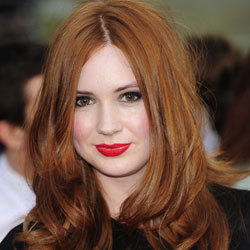

| Home | The Doctors | The Companions | The Villains | Show History |
Karen GillanKaren Sheila Gillan (born 28 November 1987) is a Scottish actress and former model, best known for her role as Amy Pond in the BBC science fiction series Doctor Who (2010–12). In film, she has starred as Jane Lockhart in Not Another Happy Ending (2013), Kaylie Russell in the horror film Oculus (2014), and Nebula in the Marvel film Guardians of the Galaxy (2014). |
Brendan Davey Monica DuCong'e Erik Eyler Kayleen Garcia Katie Hyche Ryan Moeller |
Christine O'Brien Alex Recinos Julia Schwartz Madeleine Schwartz Ann Marie Skjold Ashly Wilkins |
[Reference Links] |